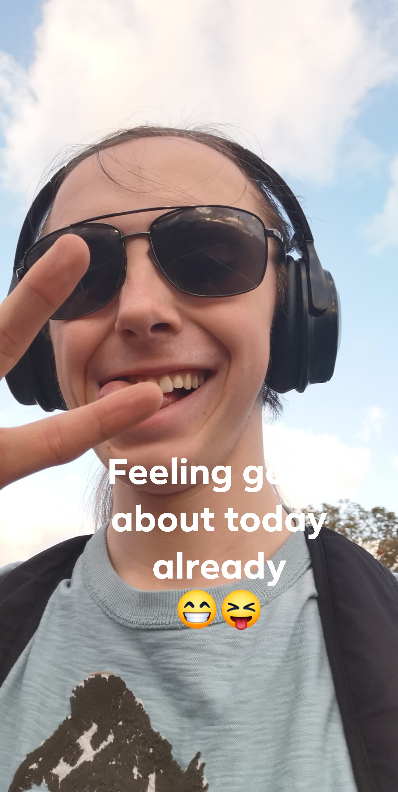

Behind the keyboard - About Me


So.... My Life So Far
The titles are funcky because I love three colors, well two gradiants and one color, absolute favourite color is purple and the two gradiants (which I have had my hair colored like) is rainbow and oil spill. Let me know your favourite colors and if you agree with mine on the Fans Forum which is accessable thought the Contact page.
I was born in a small town called Barnstaple, lovely place with a very small group of people so almost everyone knows each other or knows of each other. This did make growing up here a little strange, especially as my Nana was a teacher at a local primary school, which meant a lot of people I didn't know knew me
Sticklepath was a lovely school, this was where my Nana worked at (she still does as well). But unfortunatly I wasn't exactly liked which did kinda make for a annoying childhood, everyone and the dog wanted to annoy me so I'd retaliate and unfortunatly I almost always did (I wasn't a sensible child). Stuff like this didn't really stop till I chilled out in my later years of Secondary school. I went to Park School for my secondary education, that was interesting. I started as a very angry and unhappy child and came out a Prefect who passed his exams moderatly well...
At college I was more interested in doing something with my hands instead of something on the computer like I do now. Don't get me wrong I had my gaming PC and a Xbox and I enjoyed playing games, but for a career I really wanted to do something with my hands. After passing that with a distinction, which I was quite proud off, I started doing a Art level 3 which was fun. But, after finishing the plumbing course early I had started working at my local McDonald's which was fun, team of lovely people, easy work and alright pay. Doing this and college would have been easy, if I wasn't trying to pay off my new awesome gaming PC. So I decided to drop college and work on what I wanted to work on, which was work and YouTube, and that pritty much brings up to date. Yay!
A Little Bit About My Family
To understand my family I think you'd need a big chart as I have a relatively large family, but I love them all dearly. Something that I like to pride myself on is the where my family comes from as it's quite interesting some of the things I've been told. The basics of it is I'm part Devonshire, part Mediterranean, part Polish and finally part Irish, now I can tell you where most of these different elements come from but to be honest I'm not entirely sure where the Irish is from. What I will say though is I am quite proud of my Polish heratige and so I decided to learn more.
In the spirit about learning more about my Polish heratige I went and learnt Polish (although I'm rather rust these days), and I also went and did a bit of digging about the family members this part of me comes from. This connection comes from my Great Grandfather who was a Polish pilot when World War 2 started, he came over to Britain, unfortunatly I am not sure weather this was before or after the war started. He was in the Polish 303 squad, which famously fought in the Battle of Britain as one of the last lines of defence, and he was shot down 3 times and each time he got back in and flew again and again. Nearing the end he did become a prisoner of war after crashing in France I believe, but this is one reason I am proud to call myself Polish (even if just a bit).
I am also quite proud to call myself Polish because of the language, although it may not be as romantic as some languages or as soft as others its a beautiful language to me, this is why I dedicated so much time to learning it and I am trying to relearn it and teach others so I can use it more often. I'd also love the oppurtunity to use it to talk to some of the relatives that still live over there, I don't personally know them yet and that's a shame but hopefully in time I can get to know them. I also have family in Ireland and Austrail.
What Got Me Into Gaming?
See this question here I don't know how many times I have been asked this and I've always answered, "I don't know" or "I'm not sure it was one thing". Which unfortunatly kills that conversation quick.... So I thought I'd give it a proper thought and if I am honest I think the very first thing that got me into gaming was watch my Mum have fun playing Baldur's Gate. It's a game that was first released in 1998 and it was a top down role-playing game, kinda like Dungeons and Dragons (athough that would be because it's set in the same world)
This really started it for me because I then was interested in watching my Dad when he was playing games, watching him felt like me watching a pro gamer these days. The level of skill he had, his reactions, his descions and his pure ability to somehow overcome any challenge eventurally was just awesome in my eyes, and to be honest he still that type of good but I like to think I am to now and that kinda means for me that massive novelty has worn down to "he's pritty damn good".
To further answer this question and another I get asked often (why do you do YouTube?), I think I do this because I want to push myself till I can't be any better, and I use YouTube as a place to show my silly stuff so others can have a bit of joy. And trust me there is a lot of joy to be had in watching me piss about or die REPEATLY!
Well unless your me of course but that's just how some games swing, what you've gotta be able to do is go right this is where I kept screwing up what can I do to avoid this happening, more importantly for most situations how can I counter this if I can't avoid it. I just feel like a lot of the top teir YouTubers are awesome so you don't see them fail often so I hope to bring a breath of fresh air, so maybe you can learn from my mistakes or just have a giggle, trust me at the time I might be upset but later I'll be laughing like heck.
Thoughts For The Future
If I am completely honest I am not sure right now, I'd love lots of things to happen, weather they will or not is something different. If I had to set myself some goals for the next 5 years I'd love to have about 5k subscibers, I really want to work on my body a bit more gaining more muscle, I would love to become higher teir in both Destiny 2's Crucible and League of Legends Ranked Matchs. From my personal life at the moment I am doing a computer coding course and I'd love to pass that with some good grades, and I'd love to move onto a job where I am doing coding and website design more so that I can have more time for myself again (as I currently work overnight shifts) although I wouldn't want to leave McDonalds as it feels like a small family so if I do proceed on to do more programming work I might keep a day or two at McDonalds.
Obviously for future content I'd love to hear what you guys want to see and that's what I am here to try and show off how I would do it. Whether that's banging my head against a brick wall or kill enimies like a boss we will just have to see. I hope you enjoyed learning some interesting and possibly useless stuff about myself, if you want to know more or think there should or shouldn't be specific things here please send in a feedback form on the Contact page please, or if you want you can send me a private message. Hope you have a great day/night and remeber everything should be "Playing to the hardest! Otherwise it ain't hard enough".